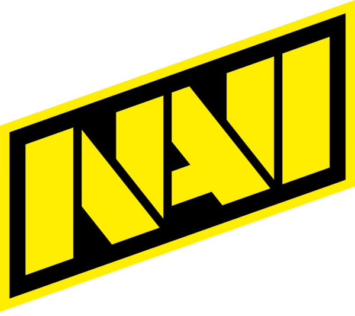
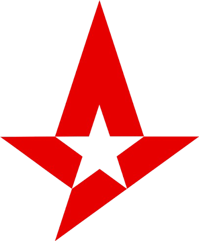
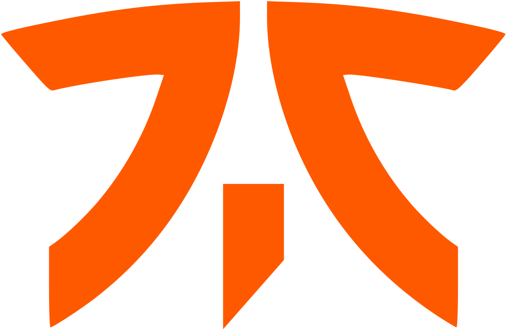
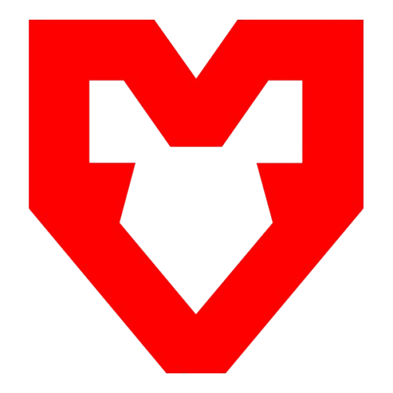
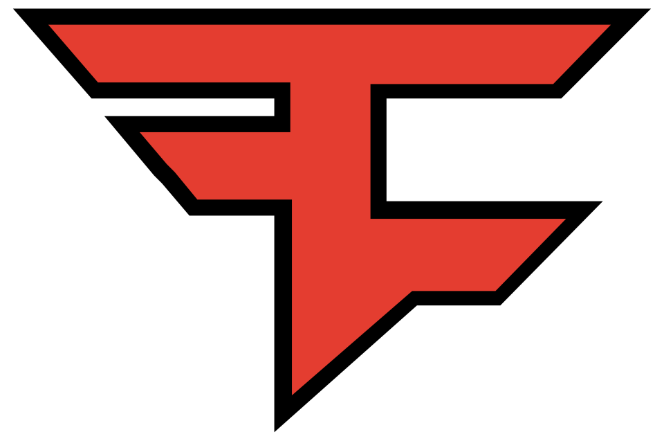
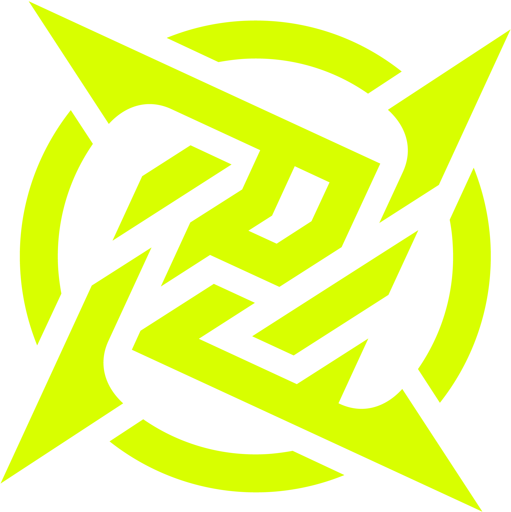

// identidade & história competitiva
As logos do Counter-Strike representam Majors icônicos, elencos lendários e eras marcantes de jogadores. Explore o design e a identidade visual por trás das maiores organizações do jogo.





